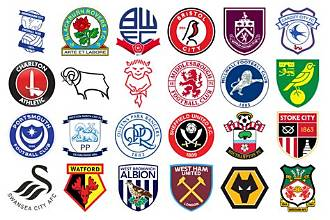

Este é o link para a Página inicial
Rúben Neves é o jogador de Portugal com mais partidas oficiais disputadas
João Moutinho é o mestre do meio-campo,sendo o segundo internacional português com mais jogos oficiais

| posição | Clube |
| 1º | Middlesbrough |
| 2º | Cidade de Swansea |
| 3º | West Ham United |
| 4º | Wolverhampton wanderer |
|---|---|
| 5º | West Bromwich Albion |
| 6º | Southampton |
| 7º | Cidade de Birmingham |
| 8º | Guardas do Parque Queens |
| 9º | Cidade de Stoke |
| 10º | Blackburn Rovers |
| 11º | Portsmouth |
| 12º | Sheffield United |
| 13º | Millwall |
| 14º | Cidade de Bristol |
| 15º | Cidade de Lincoln |
| 16º | Cidade de Cardiff |
| 17º | Wrexham |
| 18º | Bolton wanderers |
| 19º | Charlton Atlético |
| 20º | Cidade de Norwich |
| 21º | watford |
| 22º | Burnely |
| 23º | Condado de Derby |
| 24º | Preston North End |